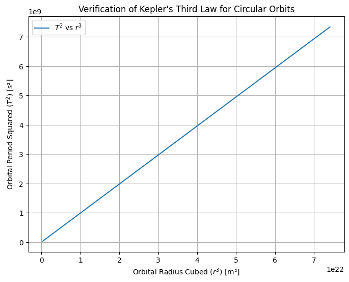
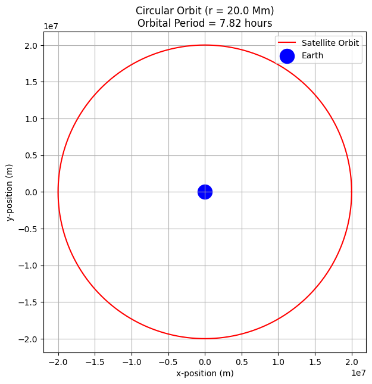
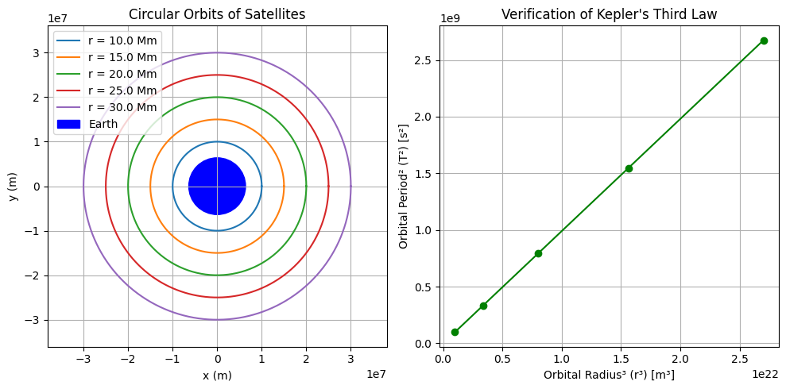

1. Derivation of Kepler’s Third Law for Circular Orbits
We begin with two key physical laws:
1. Newton's Law of Universal Gravitation
Where: - \(G\) is the gravitational constant, - \(M\) is the mass of the central body (e.g., planet or star), - \(m\) is the mass of the orbiting body, - \(r\) is the orbital radius.
2. Centripetal Force for Circular Motion
For a circular orbit, the gravitational force provides the necessary centripetal force, so:
Cancel \(m\) (assuming \(m \neq 0\)) and rearrange:
Relating Orbital Velocity to Orbital Period
Now, relate orbital velocity \(v\) to the orbital period \(T\):
Square both sides:
Substitute into the previous equation:
Multiply both sides by \(T^2\) and rearrange:
Finally, solve for \(T^2\):
Final Form (Kepler’s Third Law for Circular Orbits)
This shows that the square of the orbital period is proportional to the cube of the orbital radius, which is exactly Kepler’s Third Law—now derived from Newtonian mechanics.
2. Implications of Kepler’s Third Law in Astronomy
The relationship:
connects the orbital period \(T\) and the radius \(r\) of a body orbiting a much larger mass \(M\). This has profound applications in astronomy:
1. Calculating the Mass of Celestial Bodies
Rearranging the formula:
This allows astronomers to determine the mass of stars or planets by observing: - The orbital period \(T\) of a satellite or planet, - The orbital radius \(r\).
Example: Measuring a moon’s orbit around a planet reveals the planet’s mass.
2. Determining Orbital Distances
If the mass \(M\) of the central object is known, and the period \(T\) is measured:
This is used to: - Determine planetary distances from stars, - Locate satellites’ positions in Earth’s orbit, - Plan space missions (e.g., calculating transfer orbits).
3. Understanding Planetary Systems
- Comparing planets within a solar system shows that those farther out orbit more slowly.
- Confirming Kepler’s law across many systems supports the universal nature of gravity.
4. Applications in Space Missions and Satellites
- Engineers use this law to place satellites into stable orbits at precise altitudes (e.g., GPS satellites).
- It’s crucial in designing interplanetary missions, where timing and distance must be exact.
3. Examples and Applications of Kepler’s Third Law
Example 1: The Moon’s Orbit Around Earth
Observed Orbital Period:
\(T_{\text{Moon}} \approx 27.3\) days = \(2.36 \times 10^6\) seconds
Orbital Radius:
\(r \approx 3.84 \times 10^8\) meters
Using Kepler’s Third Law:
Plug in values:
- \(r = 3.84 \times 10^8 \, \text{m}\)
- \(T = 2.36 \times 10^6 \, \text{s}\)
- \(G = 6.67430 \times 10^{-11} \, \text{m}^3 \text{kg}^{-1} \text{s}^{-2}\) (gravitational constant)
This yields:
$$ M_{\text{Earth}} \approx 5.97 \times 10^{24} \, \text{kg} $$
This matches the known mass of Earth, confirming the accuracy of the law.
Example 2: Planets Orbiting the Sun
| Planet | Orbital Radius (AU) | Orbital Period (years) | \(T^2\) | \(r^3\) |
|---|---|---|---|---|
| Earth | 1.00 | 1.00 | 1.00 | 1.00 |
| Mars | 1.52 | 1.88 | 3.53 | 3.51 |
| Jupiter | 5.20 | 11.86 | 140.7 | 140.6 |
Result:
\(T^2 \approx r^3\) for all planets, validating Kepler’s Third Law across the Solar System.
Application in Space Missions
NASA and ESA use these calculations to: - Place satellites in orbit. - Time planetary flybys (e.g., Voyager, Juno). - Determine exoplanet distances and host star masses using orbital data.
4. Python Implementation: Simulating Circular Orbits
This simulation will: - Simulate circular orbits for different radii.
-
Compute orbital periods numerically.
-
Compare with Kepler’s Third Law:
$$ T^2 \propto r^3 $$
import numpy as np
import matplotlib.pyplot as plt
# Constants
G = 6.67430e-11 # gravitational constant (m^3 kg^-1 s^-2)
M = 5.972e24 # mass of central body (Earth) in kg
# Radii for orbits (in meters)
radii = np.linspace(7e6, 4.2e7, 100) # from low Earth orbit to geostationary
# Calculate periods for each radius using Kepler's Third Law
# T = 2π * sqrt(r^3 / GM)
periods = 2 * np.pi * np.sqrt(radii**3 / (G * M))
# Plotting T^2 vs r^3 to verify linearity
T_squared = periods**2
r_cubed = radii**3
plt.figure(figsize=(8, 6))
plt.plot(r_cubed, T_squared, label=r"$T^2$ vs $r^3$")
plt.xlabel("Orbital Radius Cubed ($r^3$) [m³]")
plt.ylabel("Orbital Period Squared ($T^2$) [s²]")
plt.title("Verification of Kepler's Third Law for Circular Orbits")
plt.grid(True)
plt.legend()
plt.show()

5.Static Visualization of Circular Orbit + Period
This simulation will: - Shows a full circular orbit for one satellite around Earth.
-
Displays Earth as a blue dot and the satellite path in red.
-
Includes the orbital period in the title for clarity.
import numpy as np
import matplotlib.pyplot as plt
# Constants
G = 6.67430e-11 # gravitational constant (m^3 kg^-1 s^-2)
M = 5.972e24 # mass of Earth (kg)
r = 2.0e7 # orbital radius (m)
# Orbital period using Kepler's Third Law
T = 2 * np.pi * np.sqrt(r**3 / (G * M)) # seconds
# Time array for one full orbit
t = np.linspace(0, T, 1000)
# Calculate position coordinates
x = r * np.cos(2 * np.pi * t / T)
y = r * np.sin(2 * np.pi * t / T)
# Plotting the orbit
plt.figure(figsize=(7, 7))
plt.plot(x, y, label="Satellite Orbit", color='red')
plt.scatter(0, 0, color='blue', s=300, label="Earth")
plt.title(f"Circular Orbit (r = {r/1e6:.1f} Mm)\nOrbital Period = {T/3600:.2f} hours")
plt.xlabel("x-position (m)")
plt.ylabel("y-position (m)")
plt.axis('equal')
plt.grid(True)
plt.legend()
plt.show()

6. Multiple Orbits + Kepler Verification
This simulation will: - Plots multiple orbits at different radii on the same graph for comparison.
-
Also plots \(T^2\) vs \(r^3\) for those orbits to confirm Kepler’s Law.
-
Combines visual clarity and physics verification in one figure.
import numpy as np
import matplotlib.pyplot as plt
# Constants
G = 6.67430e-11 # gravitational constant
M = 5.972e24 # mass of Earth
earth_radius = 6.371e6
# Define multiple orbital radii (in meters)
radii = np.array([1e7, 1.5e7, 2e7, 2.5e7, 3e7]) # from LEO to geostationary-ish
# Prepare figure for orbit plots
plt.figure(figsize=(10, 5))
# ---------- Subplot 1: Orbits ----------
plt.subplot(1, 2, 1)
theta = np.linspace(0, 2 * np.pi, 500)
for r in radii:
x = r * np.cos(theta)
y = r * np.sin(theta)
plt.plot(x, y, label=f"r = {r/1e6:.1f} Mm")
# Plot Earth
earth = plt.Circle((0, 0), earth_radius, color='blue', label="Earth")
plt.gca().add_patch(earth)
plt.axis('equal')
plt.title("Circular Orbits of Satellites")
plt.xlabel("x (m)")
plt.ylabel("y (m)")
plt.grid(True)
plt.legend()
# ---------- Subplot 2: Kepler T² vs r³ ----------
T = 2 * np.pi * np.sqrt(radii**3 / (G * M))
T_squared = T**2
r_cubed = radii**3
plt.subplot(1, 2, 2)
plt.plot(r_cubed, T_squared, 'o-', color='green')
plt.title("Verification of Kepler's Third Law")
plt.xlabel("Orbital Radius³ (r³) [m³]")
plt.ylabel("Orbital Period² (T²) [s²]")
plt.grid(True)
plt.tight_layout()
plt.show()
